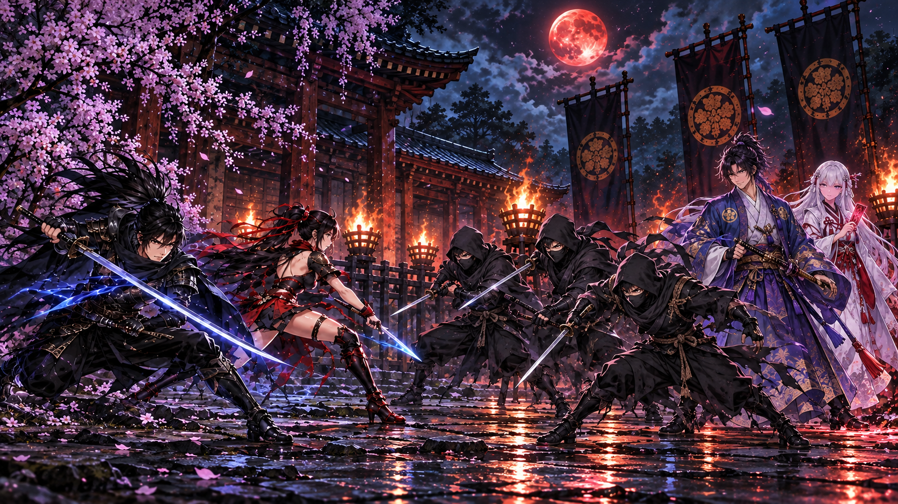
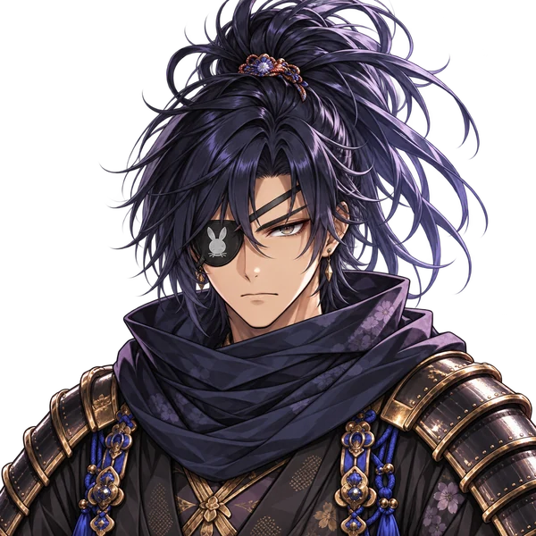

暁ノ刃A K A T S U K I
第一章 伊賀越え
配置・演出の参考画面山道の襲撃

半蔵 あやめ 忍び 忍び 忍び 左馬之助 雪姫後方忍びが前に出る。左馬之助はその奥、雪姫はさらに後方で戦況を見ている。

半蔵
「殿、俺の後ろへ。
……あやめ、前の忍びを押さえるぞ。」

半蔵 あやめ 忍び 忍び 忍び 左馬之助 雪姫後方忍びが前に出る。左馬之助はその奥、雪姫はさらに後方で戦況を見ている。

半蔵
「殿、俺の後ろへ。
……あやめ、前の忍びを押さえるぞ。」
battle/playable.html の収録絵を元に敵の配置を調整した参考画面です。v9収録の雷・粒子素材と斬撃処理を使っています。狭い画面では戦場を左右に動かせます。